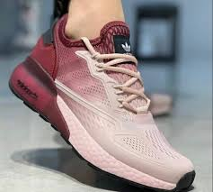
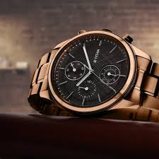
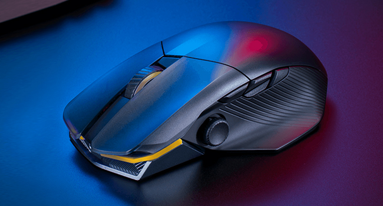

CASE STUDY
GOOGLE LENS VS MOBILENET
1.

GOOGLE
LENS: Adidas Sneakers . MOBIL NET: Skymask
Google
lense is more acurate.So, Google lense wins!
2.

GOOGLE
LENS: Titan Watch . MOBIL NET: Analog Watch
Google
lense is more acurate.So, Google lense wins!
3.
GOOGLE
LENS: Umbrella . MOBIL NET: Matchstick
Google
lense is more acurate.So, Google lense wins!
4.

GOOGLE
LENS: Gaming Mouse . MOBIL NET: Mouse
Google
lense is more acurate.So, Google lense wins!